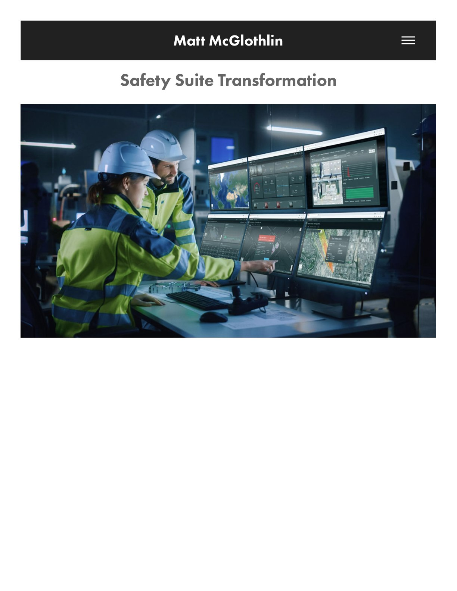
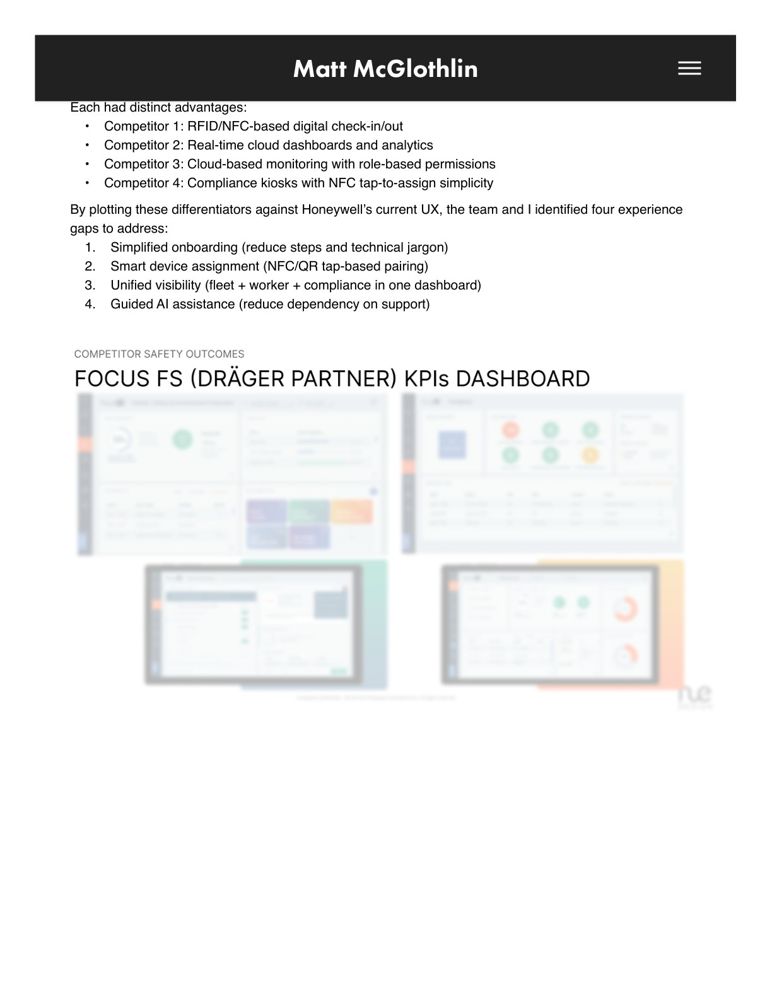
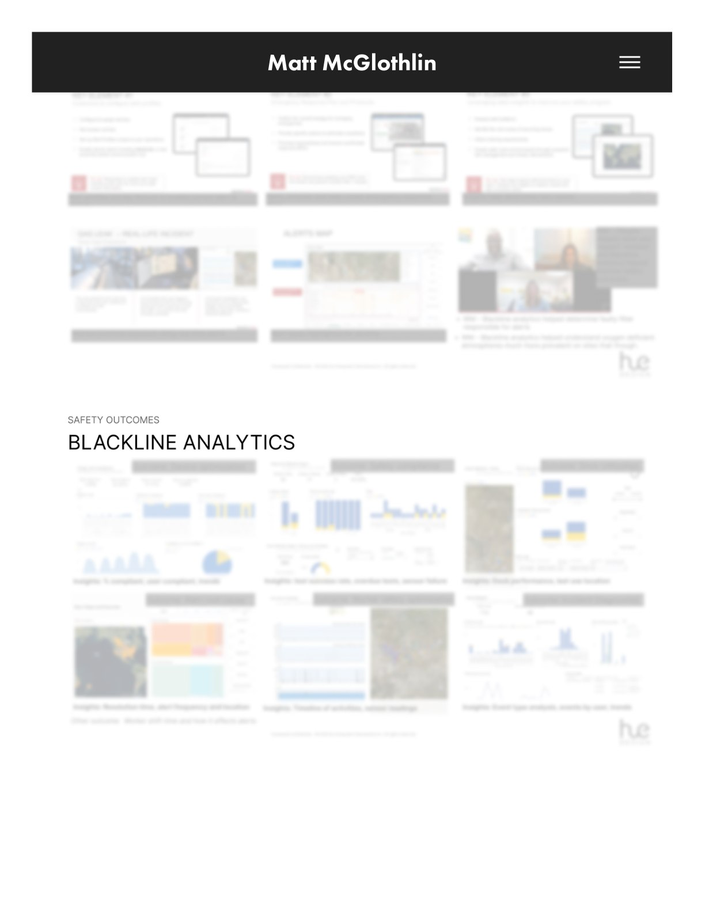
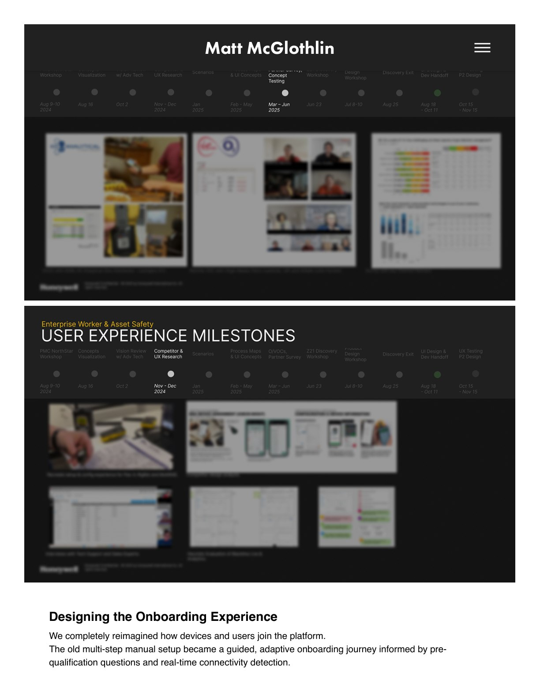
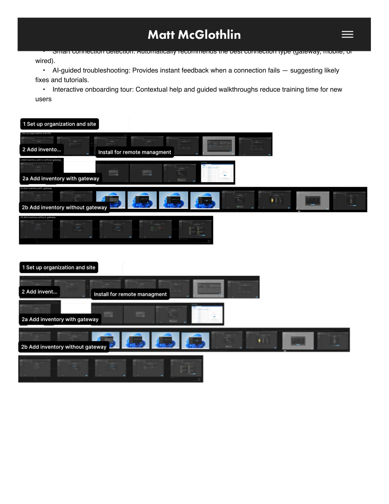
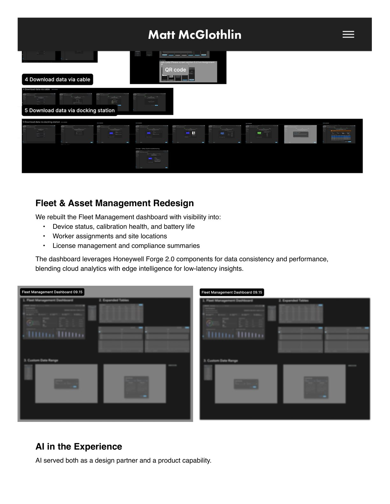
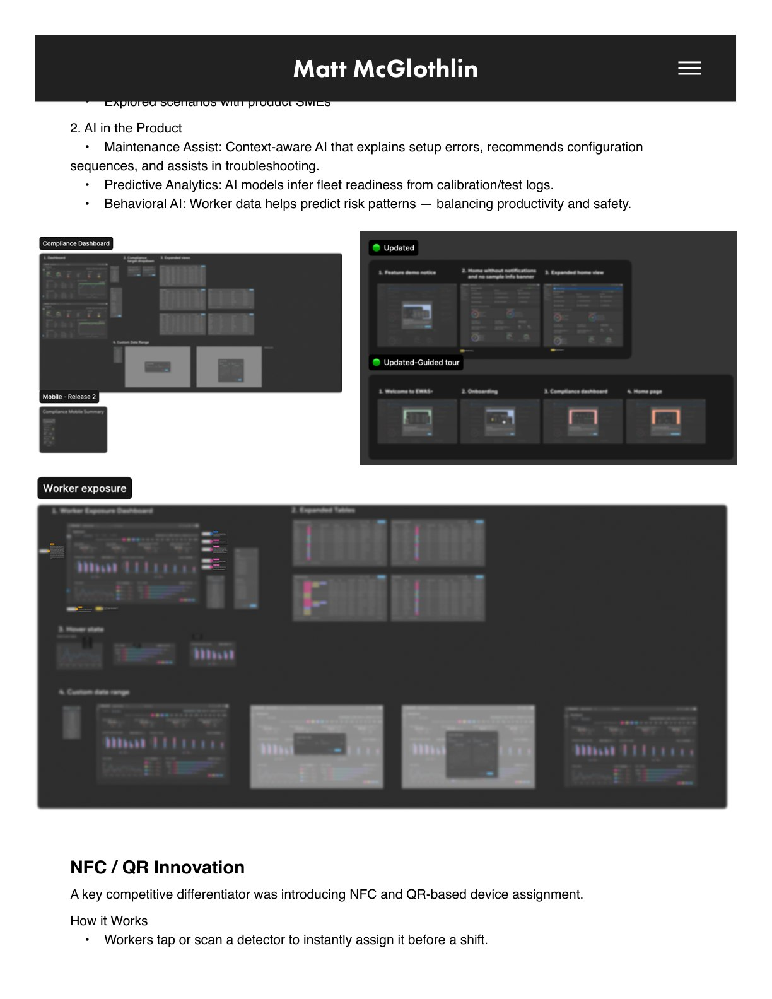
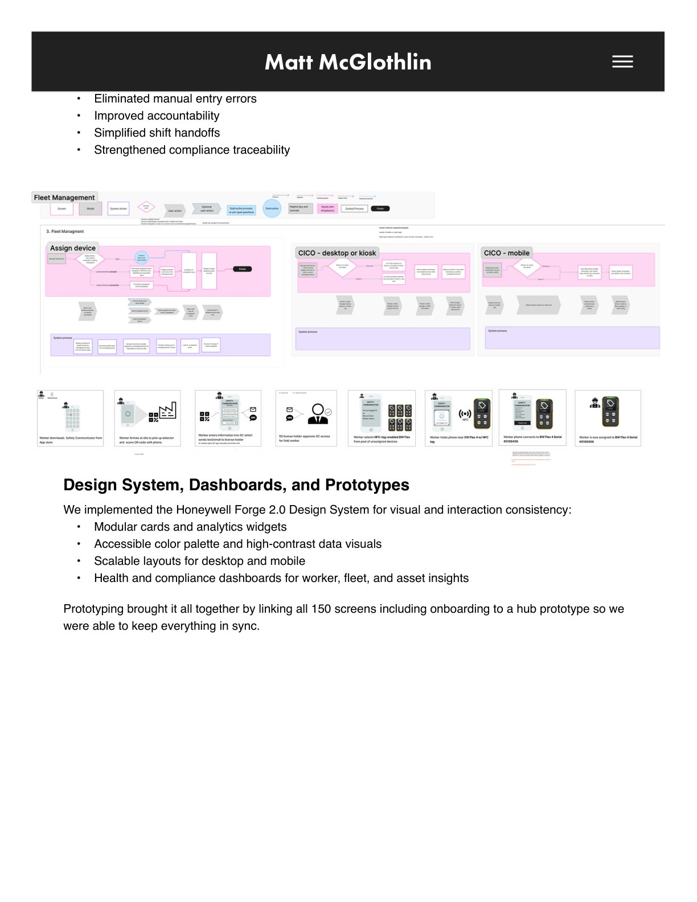
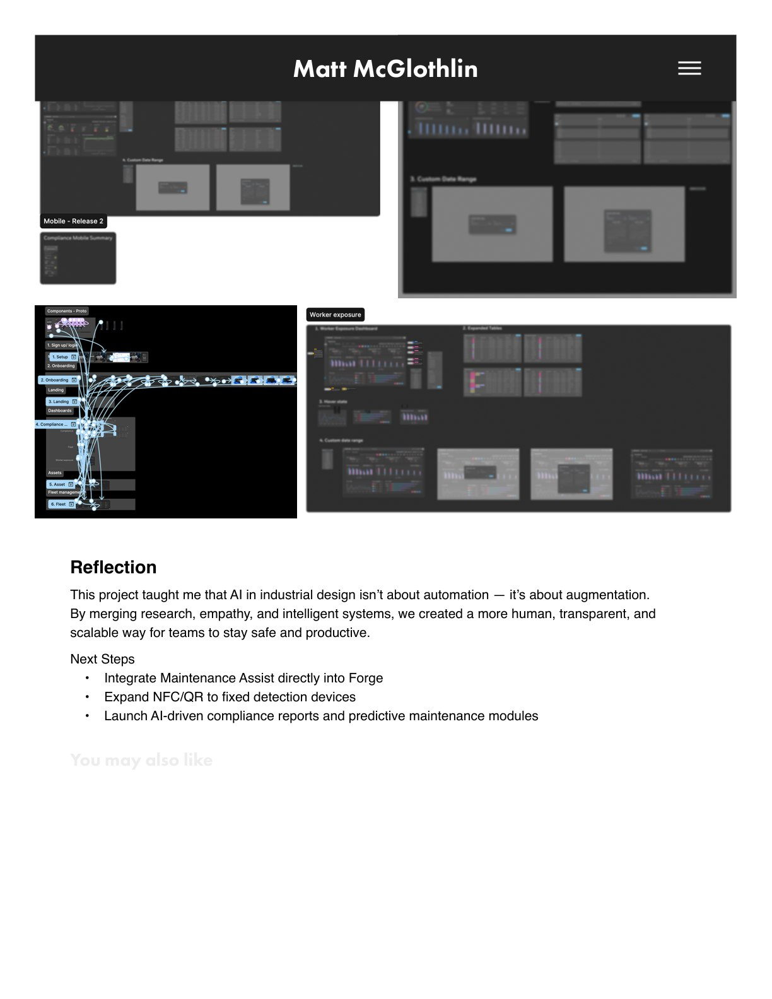

Honeywell · Enterprise UX · AI · Design Systems
Safety Suite Transformation
Transforming a fragmented legacy safety ecosystem into an intelligent, connected experience powered by AI, NFC, and a modern design system.
The Challenge
Industrial workers, safety managers, and technicians were forced to work across a fragmented legacy ecosystem. Analysis revealed deeply nested flows and redundant paths — many users had to switch between desktop apps, mobile apps (Safety Communicator, Device Configurator), and docking stations just to perform simple tasks like firmware updates or alarm calibration.
The Goal
Transform this fragmented legacy ecosystem into an intelligent, connected experience that empowers industrial workers, safety managers, and technicians through AI, NFC, and a modern design system.
My Role
I led the user interface strategy and design — defining the onboarding flow, AI interactions, and dashboard systems, and helping shape the integration of Honeywell Forge 2.0 across the new experience.
The Outcome
A unified, connected safety experience with substantial UX improvements: simplified flows, intelligent device management, and a consistent design language across desktop, mobile, and docked hardware.








